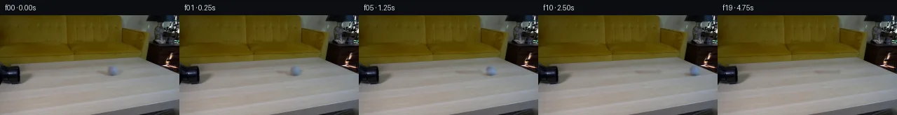

![首帧]()

Round 00
2026-11-04T20:54:46.108861+00:00像素候选变化代码 +172/−0inspection 更新
pixels 4521da22c52e928d · code 6edb2160340494a3
查看本轮 generate.py 真实 diff
--- previous/generate.py +++ current/generate.py @@ -0,0 +1,172 @@ +#!/usr/bin/env python3 +"""Generate a locked-camera continuation of the source ball roll. + +The moving object is derived only from first_frame.png. A clean tabletop is +estimated row-by-row under the source ball, then the real ball/shadow residual +is translated with bilinear subpixel sampling. All other source pixels stay +fixed. +""" + +from pathlib import Path + +import numpy as np +from PIL import Image, ImageDraw, ImageFont + +from artifact_io import save + + +ROOT = Path(__file__).resolve().parent +W, H = 256, 144 + + +def smoothstep(edge0, edge1, x): + u = np.clip((x - edge0) / (edge1 - edge0), 0.0, 1.0) + return u * u * (3.0 - 2.0 * u) + + +def estimate_clean_table(source): + """Replace the ball/shadow with a continuation of horizontal wood grain.""" + clean = source.astype(np.float32).copy() + yy, xx = np.mgrid[0:H, 0:W] + + # Feathered union: round ball plus its broad, low contact shadow. + ball_d = np.sqrt(((xx - 160.4) / 9.2) ** 2 + ((yy - 80.0) / 8.7) ** 2) + shadow_d = np.sqrt(((xx - 158.5) / 15.0) ** 2 + ((yy - 85.3) / 5.8) ** 2) + cover = np.maximum( + 1.0 - smoothstep(0.79, 1.13, ball_d), + 1.0 - smoothstep(0.74, 1.12, shadow_d), + ) + + # The grain is nearly horizontal. For each affected scan line, fit the + # flanking source pixels with a quadratic, preserving the row's own color. + sample_x = np.r_[np.arange(132, 146), np.arange(176, 190)] + target_x = np.arange(140, 180) + for y in range(69, 94): + for c in range(3): + coeff = np.polyfit(sample_x, source[y, sample_x, c], 2) + predicted = np.polyval(coeff, target_x) + a = cover[y, target_x, None] + clean[y, target_x, c : c + 1] = ( + clean[y, target_x, c : c + 1] * (1.0 - a) + + predicted[:, None] * a + ) + return np.clip(clean, 0, 255), cover + + +def bilinear_translate(field, dx, dy): + """Translate HxWxC float data without wrapping around the image.""" + out = np.zeros_like(field) + x0 = int(np.floor(dx)) + y0 = int(np.floor(dy)) + fx = float(dx - x0) + fy = float(dy - y0) + for ox, wx in ((x0, 1.0 - fx), (x0 + 1, fx)): + for oy, wy in ((y0, 1.0 - fy), (y0 + 1, fy)): + weight = wx * wy + if weight == 0: + continue + src_x0 = max(0, -ox) + src_x1 = min(W, W - ox) + src_y0 = max(0, -oy) + src_y1 = min(H, H - oy) + if src_x0 >= src_x1 or src_y0 >= src_y1: + continue + out[ + src_y0 + oy : src_y1 + oy, + src_x0 + ox : src_x1 + ox, + ] += field[src_y0:src_y1, src_x0:src_x1] * weight + return out + + +def make_frames(source): + clean, cover = estimate_clean_table(source) + source_f = source.astype(np.float32) + + # Retain exactly the real observed ball and attached shadow as an additive + # residual over the reconstructed tabletop. A soft mask prevents a box. + residual = (source_f - clean) * cover[..., None] … diff truncated; 85 more lines …